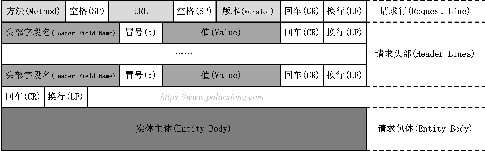
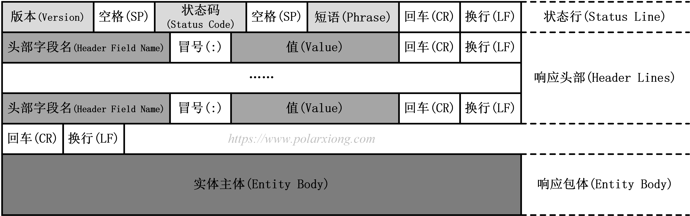
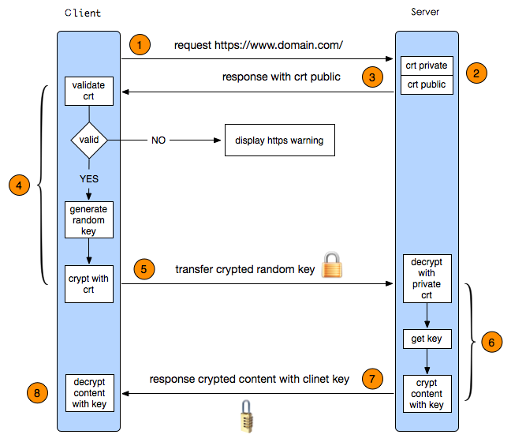
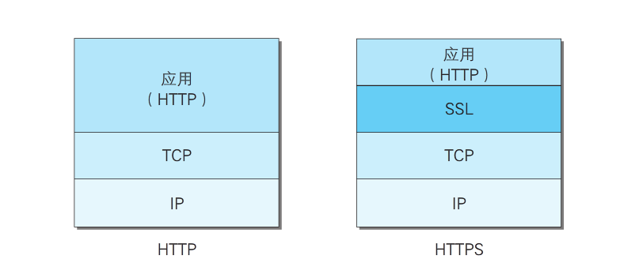

- 1. 计算机网络分层体系结构
- 2. 数据进入协议栈时的封装
- 3. TCP传输过程
- 4. HTTP报文
- 5. MTU最小64B最大1518B的由来
- 6. IPv4分组格式
- 7. HTTP响应码301和302的区别？
- 8. 什么是HTTP的长连接和短连接？
- 9. 什么是TCP的长连接和短连接？
- 10. session和cookie有什么区别
- 11. 分布式session如何同步
- 12. ARP协议
- 13. HTTPS
- 14. HTTP 1.0和HTTP 1.1的区别
- 15. HTTP 1.1和HTTP 2.0的区别
- 16. traceroute和ping的区别
1. 计算机网络分层体系结构

| 层级 | 功能 | 协议 |
|---|---|---|
| 应用层 | 文件传输、电子邮件、文件服务、虚拟终端 | TFTP、HTTP、SNMP、FTP、SMTP、DNS、Telnet |
| 表示层 | 数据格式化、代码转换、数据加密 | — |
| 会话层 | 解除或建立与别的节点的联系 | — |
| 传输层 | 提供端对端的接口 | TCP、UDP |
| 网络层 | 为数据报选择路由 | IP、ICMP、RIP、OSPF、BGP、IGMP |
| 数据链路层 | 传输有地址的帧以及错误检测功能 | SLIP、CSLIP、PPP、ARP、RARP、MTU |
| 物理层 | 以二进制数据形式在物理媒体上传输 | ISO2110、IEEE802 |
2. 数据进入协议栈时的封装

3. TCP传输过程

TCP 的那些事儿（上） | | 酷 壳 - CoolShell
TCP 的那些事儿（下） | | 酷 壳 - CoolShell
4. HTTP报文
4.1. HTTP请求报文

4.1.1. 方法（Method）
客户端希望服务器对资源执行的动作。是一个单独的词，如GET、HEAD或POST。
| 方法 | 描述 | 是否包含主体 |
|---|---|---|
| GET | 请求获取Request-URL所标识的资源 | 否 |
| POST | 向Request-URL所标识的资源发送需要处理的数据 | 是 |
| HEAD | 只请求获取由Request-URL所标识的资源的首部 | 否 |
| PUT | 将请求的主体部分存储在服务器，并用Request-URL作为其标识 | 是 |
| DELETE | 请求服务器删除Request-URL所标识的资源 | 否 |
| TRACE | 请求服务器回送收到的请求信息，主要用于测试或诊断 | 否 |
| OPTIONS | 请求服务器告知其支持的各种功能 | 否 |
4.1.2. 请求URL（Request-URL）
命名了所请求资源，或者URL路径组件的完整URL。
4.1.3. 版本（Version）
报文所使用的HTTP版本，格式为
HTTP/.
其中主要版本号（major）和次要版本号（minor）都是整数。
4.1.4. 首部（Header Field）
首部和方法配合工作，共同决定了客户端和服务器能做什么事情。
4.1.4.1. 通用首部
4.1.4.1.1. 通用信息首部
| 首部 | 描述 |
|---|---|
| Connection | 允许客户端和服务器指定与请求/响应连接有关的选项 |
| Date | 提供日期和时间标志，说明报文是什么时间创建的 |
| MIME-Version | 给出了发送端使用的MIME版本 |
| Trailer | 如果报文采用了分块传输编码（chunked transfer encoding）方式，就可以使用首部列出位于报文拖挂（trailer）部分的首部集合 |
| Transfer-Encoding | 告知接收端为了保证报文的可靠传输，对报文采用了什么编码方式 |
| Update | 给出了发送端可能想要”升级”使用的新版本或协议 |
| Via | 显示了报文经过的中间节点（代理、网关） |
4.1.4.1.2. 通用缓存首部
| 首部 | 描述 |
|---|---|
| Cache-Control | 用于随报文传送缓存的指示 |
| Pragma | 另一种随报文传送指示的方式，但并不专用于缓存。 |
4.1.4.2. 请求首部
用于说明是谁或什么在发送请求、请求源自何处，或者客户端的喜好及能力。
4.1.4.2.1. 请求信息首部
| 首部 | 描述 |
|---|---|
| Client-IP | 提供了运行客户端的机器的IP地址。 |
| From | 提供了客户端用户的E-mail地址。 |
| Host | 提供可接受请求的服务器的主机名和端口号 |
| Referer | 提供了包含当前请求URI的文档的URL |
| UA-Color | 提供了与客户端显示器的显示颜色有关的信息 |
| UA-CPU | 提供了客户端CPU的类型或制造商 |
| UA-Disp | 提供了与客户端显示器能力有关的信息 |
| UA-OS | 提供了运行在客户端机器上的操作系统的名称及版本 |
| UA-Pixels | 提供了客户端显示器的像素信息 |
| User-Agent | 将发起请求的应用程序名称告知服务器 |
4.1.4.2.2. Accept首部
为客户端提供了一种将其洗好和能力告知服务器的方式。这样服务器就可以根据这些信息，对要发送的内容做出更明智的决定。
| 首部 | 描述 |
|---|---|
| Accept | 告诉服务器能够发送哪些媒体类型 |
| Accept-Charset | 告诉服务器发送哪些字符集 |
| Accept-Encoding | 告诉服务器能够发送哪些编码方式 |
| Accept-Language | 告诉服务器能够发送哪些语言 |
| TE | 告诉服务器可以使用哪些扩展传输编码 |
4.1.4.2.3. 条件请求首部
有时客户端希望为请求加上某些限制。比如，如果客户端已经有了一份文档副本，就希望只在服务器上的文档与客户端拥有的副本有区别时，才请求服务器传输文档。通过条件请求首部添加限制就可以达到目的。
| 首部 | 描述 |
|---|---|
| Expect | 允许客户端列出某请求所要求的服务器行为 |
| If-Match | 如果实体标记与文档之前的实体标记相匹配，就获取这份文档 |
| If-Modified-Since | 除非在某个指定的日期之后资源被修改过，否则就限制这个请求 |
| If-None-Match | 如果提供的实体标记与当前文档的实体标记不相符，就获取文档 |
| If-Range | 允许对文档的某个范围进行条件请求 |
| If-Unmodified-Since | 除非在某个日期之后资源没有被修改过，否则就限制这个请求 |
| Range | 如果服务器支持范围请求，就请求资源的指定范围 |
4.1.4.2.4. 安全请求首部
对请求进行质询／响应认证。
| 首部 | 描述 |
|---|---|
| Authorization | 包含了客户端提供给服务器，以便对其自身进行认证的数据 |
| Cookie | 客户端用它向服务器传送一个令牌——它并不是真正的安全首部，但确实隐含了安全功能 |
| Cookie2 | 用来说明请求端支持的cookies版本 |
4.1.4.2.5. 代理请求首部
| 首部 | 描述 |
|---|---|
| Max-Forward | 在通往源端服务器的路径上，将请求转发给其他代理或网关的最大次数——与TRACE方法一起使用 |
| Proxy-Authorization | 与Authorization首部相同，但这个首部实在与代理进行认证的时候后使用的 |
| Proxy-Connection | 与Connection首部相同，但这个首部是在与代理建立连接时使用的 |
4.1.4.3. 响应首部
响应首部为客户端提供了一些额外的信息, 并在将来发起更好的请求。
| 首部 | 描述 |
|---|---|
| Age | （从最初创建开始）响应持续的时间 |
| Public | 服务器为其资源支持的请求方法列表 |
| Retry-After | 如果资源不可用的话，在此日期或时间重试 |
| Server | 服务器应用程序软件的名称和版本 |
| Title | 对HTML文档来说，就是HTML文档的源端给出的标题 |
| Warning | 比原因短语中更详细一些的警告报文 |
4.1.4.3.1. 协商首部
如果资源有多种表示方法——比如，如果服务器上有某文档的法语和德语译稿，HTTP/1.1可以为服务器和客户端提供对资源进行协商的能力。
| 首部 | 描述 |
|---|---|
| Accept-Range | 对此资源来说，服务器可接受的范围类型 |
| Vary | 服务器查看的其他首部的列表，可能会使响应发生变化；也就是说，这是一个首部列表，服务器会根据这些首部的内容挑选初最合适的资源版本发送给客户端。 |
4.1.4.3.2. 安全响应首部
| 首部 | 描述 |
|---|---|
| Proxy-Authenticate | 来自代理的对客户端的质询列表 |
| Set-Cookie | 不是真正的安全首部，但隐含有安全功能；可以在客户端设置一个令牌，以便服务器对客户端进行标识 |
| Set-Cookie2 | 与Set-Cookie类似 |
| WWW-Authenticate | 来自服务器的对客户端的质询列表。 |
4.1.4.4. 实体首部
实体首部指的是用于应对实体主体部分的首部。比如，可以用实体首部来说明实体主体部分的数据类型。
| 首部 | 描述 |
|---|---|
| Allow | 列出了可以对此实体执行的请求方法 |
| Location | 告知客户端实体实际上位于何处，用于将接收端定向到资源的（可能是新的）位置（URL）上去 |
4.1.4.4.1. 内容首部
内容首部提供了与实体内容相关的特定信息，说明了其类型，尺寸以及处理它所需的其他有用信息。
| 首部 | 描述 |
|---|---|
| Content-Base | 解析主体中的相对URL时使用的基础URL |
| Content-Encoding | 对主体执行的任意编码方式 |
| Content-Language | 理解主体时最适宜使用的自然语言 |
| Content-length | 主体的长度或尺寸 |
| Content-Location | 资源实际所处的位置 |
| Content-MD5 | 主体的MD5校验和 |
| Content-Range | 在整个资源中此实体表示的字节范围 |
| Content-Type | 这个主体的对象类型 |
4.1.4.4.2. 实体缓存首部
通用的缓存首部说明了如何或什么时候进行缓存。实体的缓存首部提供了与被缓存实体有关的信息。
| 首部 | 描述 |
|---|---|
| ETag | 与此实体相关的实体标记 |
| Expires | 实体不再有效，要从原始的源端再次获取此实体的日期和时间 |
| Last-Modified | 这个实体最后一次被修改的日期和时间 |
4.1.5. 实体主体（Entity Body）
实体的主体是HTTP报文的负荷，就是HTTP要传输的内容。
4.2. HTTP响应报文

4.2.1. 版本（Version）
如上所述
4.2.2. 状态码（Status Code）和短语（Phrase）
4.2.2.1. 状态码分类
| 整体范围 | 已定义范围 | 分类 |
|---|---|---|
| 100～199 | 100～101 | 消息 |
| 200～299 | 200～206 | 成功 |
| 300～399 | 300～305 | 重定向 |
| 400～499 | 400～415 | 客户端错误 |
| 500～599 | 500～505 | 服务器错误 |
4.2.2.2. 常见状态码：
| 状态码 | 短语 | 含义 |
|---|---|---|
| 200 | OK | 请求已成功，请求所希望的响应头或数据体将随此响应返回。 |
| 301 | Moved Permanently | 被请求的资源已永久移动到新位置，并且将来任何对此资源的引用都应该使用本响应返回的若干个URI之一。 |
| 400 | Bad Request | 由于包含语法错误，当前请求无法被服务器理解。 |
| 401 | Unauthorized | 当前请求需要用户验证。 |
| 403 | Forbidden | 服务器已经理解请求，但是拒绝执行它。 |
| 404 | Not Found | 请求失败，请求所希望得到的资源未被在服务器上发现。 |
| 408 | Request Timeout | 请求超时。 |
| 500 | Internal Server Error | 服务器遇到了一个未曾预料的状况，导致了它无法完成对请求的处理。 |
| 503 | Service Unavailable | 由于临时的服务器维护或者过载，服务器当前无法处理请求。 |
4.2.3. 首部（Header Field）
如上所述
4.2.4. 实体主体（Entity Body）
如上所述
5. MTU最小64B最大1518B的由来
在CSMA/CD下，每个节点在自己发送数据之后的一小段时间内，存在着遭遇冲突的可能性，只有经过争用期（以太网端到端的往返时延）这段时间还没有检测到冲突，才能确定这次发送不会发生冲突。而争用期为57.6us（以太网支持最大4个中继器，最长2500米），在10Mbps网络中，57.6us内能够传输576bit，即72B；去掉8B的前导符和帧开始符，以太网帧的最小长度是64B。
由于线路质量差而引起的丢包，发生在大包的概率比小包的概率大得多，所以大包在丢包率较高的线路上不是一个好的选择；但如果选择一个较小的长度，传输效率又不高。如选择以太网长度为218B，则TCP payload = 218 - Ethernet Header - IP Header - TCP Header = 218 - 18 - 20 - 20 = 160B，有效传输率 = 160 / 218 = 73%；而如果选择长度为1518B，则有效传输率 = 1460/1518 = 96%。于是选取一个折中的长度：1518B；其对应的IP数据报长度为1500B。
6. IPv4分组格式

7. HTTP响应码301和302的区别？
301：永久重定向。是当用户或搜索引擎向网站服务器发出浏览请求时，服务器返回的HTTP数据流中头信息(header)中的状态码的一种，表示本网页永久性转移到另一个地址。
302：临时重定向。搜索引擎会抓取新的内容而保留旧的网址。因为服务器返回302代码，搜索引擎认为新的网址只是暂时的。
8. 什么是HTTP的长连接和短连接？
在HTTP/1.0中，默认使用的是短连接。也就是说，浏览器和服务器每进行一次HTTP操作，就建立一次连接，但任务结束就中断连接。
但从 HTTP/1.1起，默认使用长连接，用以保持连接特性。使用长连接的HTTP协议，会在响应头中包含有Connection:keep-alive。在使用长连接的情况下，当一个网页打开完成后，客户端和服务器之间用于传输HTTP数据的TCP连接不会关闭，如果客户端再次访问这个服务器上的网页，会继续使用这一条已经建立的连接。
HTTP协议的长连接和短连接，实质上是TCP协议的长连接和短连接。
9. 什么是TCP的长连接和短连接？
TCP短连接：client向server发起连接请求，server接到请求，然后双方建立连接。client向server发送消息，server回应client，然后一次读写就完成了，这时候双方任何一个都可以发起close操作，不过一般都是client先发起close操作。
TCP长连接：client向server发起连接，server接受client连接，双方建立连接。Client与server完成一次读写之后，它们之间的连接并不会主动关闭，后续的读写操作会继续使用这个连接。
长连接可以省去较多的TCP建立和关闭的操作，减少浪费，节约时间；但对server端压力较大。短连接对于服务器来说管理较为简单，存在的连接都是有用的连接，不需要额外的控制手段。但如果客户请求频繁，将在TCP的建立和关闭操作上浪费时间和带宽。
长连接多用于操作频繁，点对点的通讯，而且连接数不能太多情况。而像Web网站的http服务一般都用短链接。
10. session和cookie有什么区别
- session在服务器端，cookie在客户端（浏览器）；
- session的运行依赖session id，而session id是保存在cookie中的；
- cookie目的可以跟踪会话，也可以保存用户喜好或者保存用户名密码；
- session用来跟踪会话。
11. 分布式session如何同步
- 进程间通信传递session数据；
- cookie加密存储session；
- 采用统一session接入点
12. ARP协议
ARP协议为网络层协议，其工作在数据链路层，适用于局域网。ARP协议工作过程：
- 本地主机在局域网中广播ARP请求，ARP请求数据帧中包含目的主机的IP地址。意思是“如果你是这个IP地址的拥有者，请回答你的硬件地址”。
- 目的主机的ARP层解析这份广播报文，识别出是询问其硬件地址。于是发送ARP应答包，里面包含IP地址及其对应的硬件地址。
- 本地主机收到ARP应答后，知道了目的地址的硬件地址，之后的数据报就可以传送了。
13. HTTPS

HTTPS传输过程：
- 服务端配置：采用HTTPS协议的服务器必须要有一套数字证书。这套证书其实就是一对公钥和私钥。
- 客户端发起HTTPS请求：就是用户在浏览器中输入一个https网址，连接到server的443端口。
- 传送证书：即公钥，只是包含了很多信息，如证书的颁发机构，过期时间等。
- 客户端解析证书：由客户端的TLS来完成的，首先会验证公钥是否有效，比如颁发机构，过期时间等。如果证书没有问题，
- 传送随机值（私钥）：客户端生成一个随机值，然后用证书对该随机值进行加密并发送给服务端。
- 服务端解密随机值（私钥）：服务端用私钥解密后，得到了客户端传过来的随机值。
- 服务端传输加密后的信息：服务端将要传送的信息用随机值（私钥）加密后，传送给客户端。
- 客户端解密信息：客户端使用随机值（私钥）解密服务端发送的加密信息，获取解密后的信息。
HTTPS其实就是建构在SSL/TLS之上的HTTP协议：

HTTP使用TCP三次握手建立连接，客户端和服务器需要交换3个包；HTTPS除了TCP的三个包，还要加上SSL握手需要的9个包，共是12个包。
HTTPS和HTTP主要区别：
- HTTPS协议需要到ca申请证书，一般免费证书较少，因而需要一定费用。
- HTTP是超文本传输协议，信息是明文传输，HTTPS则是具有安全性的SSL加密传输协议。
- HTTP和HTTPS使用的是完全不同的连接方式，用的端口也不一样，前者是80，后者是443。
14. HTTP 1.0和HTTP 1.1的区别
- 缓存处理：在HTTP 1.0中主要使用header里的
If-Modified-Since,Expires来做为缓存判断的标准，HTTP 1.1则引入了更多的缓存控制策略例如Entity tag，If-Unmodified-Since,If-Match,If-None-Match等更多可供选择的缓存头来控制缓存策略。 - 带宽优化及网络连接的使用：HTTP 1.0中，存在一些浪费带宽的现象，例如客户端只是需要某个对象的一部分，而服务器却将整个对象送过来了，并且不支持断点续传功能，HTTP 1.1则在请求头引入了range头域，它允许只请求资源的某个部分，即返回码是206（Partial Content），这样就方便了开发者自由的选择以便于充分利用带宽和连接。
- 错误通知的管理：在HTTP 1.1中新增了24个错误状态响应码，如409（Conflict）表示请求的资源与资源的当前状态发生冲突；410（Gone）表示服务器上的某个资源被永久性的删除。
- Host头处理：在HTTP 1.0中认为每台服务器都绑定一个唯一的IP地址，因此，请求消息中的URL并没有传递主机名（hostname）。但随着虚拟主机技术的发展，在一台物理服务器上可以存在多个虚拟主机（Multi-homed Web Servers），并且它们共享一个IP地址。HTTP 1.1的请求消息和响应消息都应支持Host头域，且请求消息中如果没有Host头域会报告一个错误（400 Bad Request）。
- 长连接：HTTP 1.1支持长连接（PersistentConnection）和请求的流水线（Pipelining）处理，在一个TCP连接上可以传送多个HTTP请求和响应，减少了建立和关闭连接的消耗和延迟，在HTTP 1.1中默认开启Connection： keep-alive，一定程度上弥补了HTTP 1.0每次请求都要创建连接的缺点。
参考：HTTP,HTTP2.0,SPDY,HTTPS你应该知道的一些事 | AlloyTeam
15. HTTP 1.1和HTTP 2.0的区别
- 新的二进制格式（Binary Format）：HTTP 1.x的解析是基于文本。基于文本协议的格式解析存在天然缺陷，文本的表现形式有多样性，要做到健壮性考虑的场景必然很多，二进制则不同，只认0和1的组合。基于这种考虑HTTP 2.0的协议解析决定采用二进制格式，实现方便且健壮。
- 多路复用（MultiPlexing）：即连接共享，即每一个request都是是用作连接共享机制的。一个request对应一个id，这样一个连接上可以有多个request，每个连接的request可以随机的混杂在一起，接收方可以根据request的id将request再归属到各自不同的服务端请求里面。
- header压缩：HTTP 1.x的header带有大量信息，而且每次都要重复发送，HTTP 2.0使用encoder来减少需要传输的header大小，通讯双方各自cache一份header fields表，既避免了重复header的传输，又减小了需要传输的大小。
- 服务端推送（server push）：server push功能。
参考：HTTP,HTTP2.0,SPDY,HTTPS你应该知道的一些事 | AlloyTeam
16. traceroute和ping的区别
16.1. traceroute
traceroute主要利用了TCP/IP协议族中的两个特性：
- 路由器转发IP数据报时需要把TTL减1，当TTL减为0时路由器会向源端发送ICMP超时报文；
- 主机（或路由器）处理处理目的地址时本机的UDP报文时，当报文中目的端口字段指定的端口不可用时，将向UDP报文发送端发送ICMP端口不可达报文。
traceroute的工作流程是源端发送一份TTL为1的UDP报文到目的端，处理这个报文的第一个路由器将TTL减1，丢弃该报文，并向源端发回ICMP超时报文，从而学到第一台路由器地址。然后traceroute发送TTL为2的数据报，这样第二台路由器同样丢弃报文并发回ICMP超时报文，从而学到第二台路由器地址。如此循环直到目的主机（或路由器）接收到该报文，这样就学习到了全路径的路由。
目的端接收UDP报文以后可能不会像其他路由器一样发回ICMP超时报文，这时在traceroute发送的UDP报文中目的端口号填上一个不可能被使用的值（30000以上），这样目的端收到时会发回ICMP端口不可达报文，这样traceroute就知道已经到达目的端了。
16.2. ping
ping发送一份ICMP Echo Request（Echo Request）报文给另一台主机，并等待返回ICMP Echo Reply（Echo Reply）。